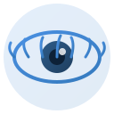
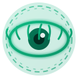

专注模式浏览器扩展 - 图标预览
蓝色系，代表平静和专注
绿色系，带发光和聚焦圈效果


// 在 manifest.json 中配置
{
"icons": {
"16": "icons/icon-default-16.png",
"48": "icons/icon-default-48.png",
"128": "icons/icon-default-128.png"
},
"action": {
"default_icon": {
"16": "icons/icon-default-16.png",
"48": "icons/icon-default-48.png",
"128": "icons/icon-default-128.png"
}
}
}
// 在代码中动态切换
chrome.action.setIcon({
path: {
"16": "icons/icon-active-16.png",
"48": "icons/icon-active-48.png",
"128": "icons/icon-active-128.png"
}
});